目录
- 任务特定课程
- 教师引导课程
- 通过自我对弈构建课程
- 自动目标生成
- 基于技能的课程
- 通过蒸馏构建课程
- 引用
- 参考文献
[2020-02-03 更新：在“任务特定课程”部分提到 PCG。] [2020-02-04 更新：新增“通过蒸馏构建课程”部分。]
如果我们想教一个连基本算术都不会的三岁小孩积分或导数，这听起来几乎是不可能完成的任务。这就是教育的重要性，它提供了一种系统化的方法，将复杂知识拆解，并设计出从简单到困难的良好课程。课程能让人类学习困难事物变得更容易且更易上手。那么，机器学习模型呢？我们能否通过课程让模型学得更高效？我们能否设计课程来加速学习过程？
早在 1993 年，Jeffrey Elman 就提出了使用课程训练神经网络的想法。他在学习简单语言语法方面的早期工作证明了这种策略的重要性：从有限的简单数据开始，逐步增加训练样本的复杂性；否则模型根本无法学习。
与不使用课程的训练相比，我们期望采用课程能加快收敛速度，并可能（也可能不会）提升最终模型性能。设计一个高效且有效的课程并不容易。请记住，一个糟糕的课程甚至可能阻碍学习。
接下来，我们将探讨几类课程学习方法，如下图所示。大多数案例应用于强化学习，少数例外用于监督学习。
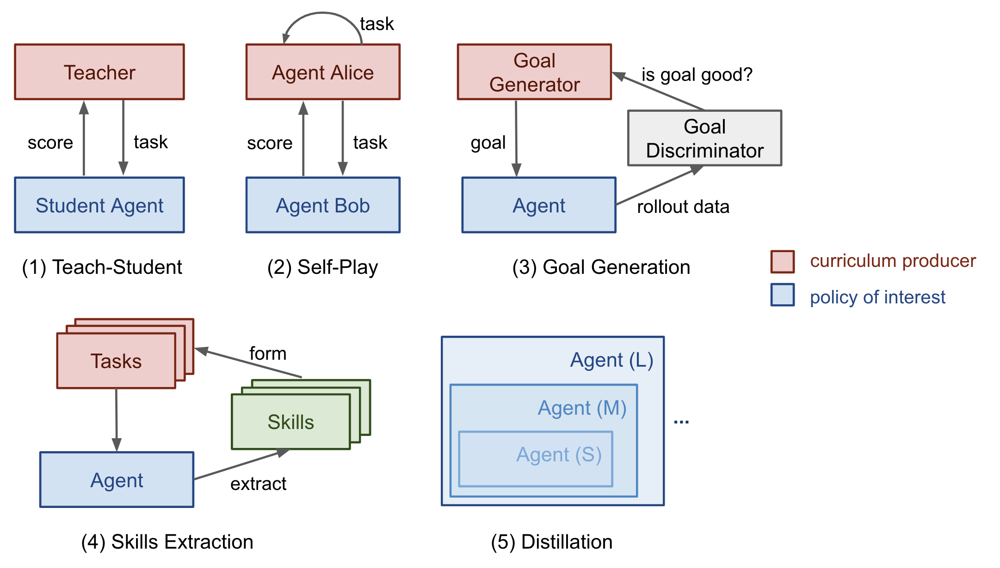
在《The importance of starting small》论文（Elman 1993）中，我特别喜欢开头的句子，觉得它们既鼓舞人心又发人深省：
“人类与其他物种在许多维度上存在差异，但其中两个维度特别值得注意。人类展现出非凡的学习能力；而且人类达到成熟所需的时间也异常漫长。学习带来的适应性优势显而易见，而且可以说，通过文化，学习创造了一种非基因基础的行为传递方式，这可能加速我们物种的进化。”
确实，学习可能是我们人类拥有的最佳超能力。
任务特定课程#
Bengio 等（2009）对早期课程学习做了很好的综述。该论文通过人工设计任务特定课程的玩具实验提出了两个观点：
- 更干净的样本可能带来更快更好的泛化。
- 逐步引入更困难的样本能加速在线训练。
有些课程策略可能毫无用处甚至有害，这一点是合理的。该领域一个值得回答的好问题是：什么样的通用原则能让某些课程策略表现更好？Bengio 2009 的论文假设，让学习聚焦于那些既不太难也不太简单的“有趣”样本会更有益。
如果我们朴素的课程策略是让模型在复杂度逐渐增加的样本上训练，我们首先需要一种量化任务难度的方法。一个想法是，使用另一个在其他任务上预训练的模型相对于该任务的最小损失（Weinshall 等，2018）。通过这种方式，预训练模型的知识可以通过建议训练样本的排序转移到新模型上。图 2 显示了课程组（绿色）相较于对照组（随机顺序；黄色）和反课程组（逆序；红色）的有效性。
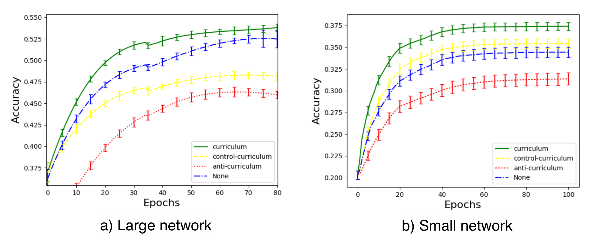
Zaremba & Sutskever（2014）进行了一项有趣的实验：训练 LSTM 预测简短 Python 程序的数学运算输出，而不实际执行代码。他们发现课程对于学习是必要的。程序的复杂度由两个参数控制：长度 ∈ [1, a] 和嵌套 ∈ [1, b]。考虑了三种策略：
- 朴素课程：先增加长度直到达到 a；然后增加嵌套并将长度重置为 1；重复此过程直到两者都达到最大值。
- 混合课程：在 [1, a] 内采样长度，在 [1, b] 内采样嵌套。
- 组合：朴素 + 混合。
他们注意到组合策略始终优于朴素课程，并且通常（但并非总是）优于混合策略——这表明在训练中混入简单任务以避免遗忘非常重要。
程序化内容生成（PCG）是创建不同难度关卡视频游戏的流行方法。PCG 涉及算法随机性和大量人类专家在设计游戏元素及其依赖关系方面的投入。程序化生成的关卡已被引入多个基准环境中，用于评估强化学习智能体是否能泛化到未训练过的新关卡（元强化学习！），如 GVGAI、OpenAI CoinRun 和 Procgen benchmark。使用 GVGAI，Justesen 等（2018）证明强化学习策略容易对特定游戏过拟合，但通过一个随模型性能同步提升任务难度的简单课程进行训练，能帮助其泛化到新的人类设计关卡。在 CoinRun 中也观察到类似结果（Cobbe 等，2018）。POET（Wang 等，2019）是另一个利用进化算法和程序化生成关卡来提升强化学习泛化能力的例子，我在 元强化学习 中已详细描述过。
要遵循上述课程学习方法，通常需要在训练过程中解决两个问题：
- 设计一个指标来量化任务难度，以便据此对任务排序。
- 在训练过程中向模型提供一个难度逐渐增加的任务序列。
然而，任务的顺序不必是严格顺序的。在我们的魔方论文（OpenAI 等，2019）中，我们依靠 Automatic Domain Randomization (ADR) 通过扩展一个复杂度逐渐增加的环境分布来生成课程。每个任务的难度（即在一组环境中解魔方）取决于各种环境参数的随机化范围。即使在假设所有环境参数都不相关的简化情况下，我们仍能为机器人手创建一个相当不错的课程来学习该任务。
教师引导课程#
自动课程学习的想法由 Graves 等，2017 稍早提出。它将 N 任务课程视为一个 多臂老虎机问题及其解决方案-armed bandit}} 问题，并使用一个自适应策略来学习优化该老虎机的回报。N
论文中考虑了两类学习信号：
- 损失驱动的进步：一次梯度更新前后损失函数的变化。这类奖励信号跟踪学习过程的速度，因为最大的任务损失下降等价于最快的学习。
- 复杂度驱动的进步：网络权重后验分布与先验分布之间的 KL 散度。这类学习信号受 MDL 原则启发，“只有当模型复杂度增加一定量能压缩更多数据时，这种增加才值得”。因此，模型复杂度预计会在模型很好地泛化到训练样本时增加最多。
通过另一个强化学习智能体自动提出课程的这个框架被形式化为教师-学生课程学习（TSCL；Matiisen 等，2017）。在 TSCL 中，学生是一个在实际任务上工作的强化学习智能体，而教师智能体是一个选择任务的策略。学生目标是掌握一个可能直接学习很困难的复杂任务。为了让这个任务更容易学习，我们设置教师智能体通过挑选合适的子任务来指导学生的训练过程。
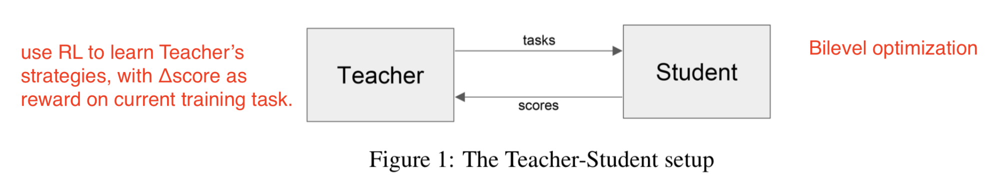
在此过程中，学生应该学习以下任务：
- 能帮助学生取得最快学习进步的任务，或
- 有被遗忘风险的任务。
注：将教师模型建模为强化学习问题的设置与 Neural Architecture Search (NAS) 感觉非常相似，但不同的是 TSCL 中的强化学习模型作用于任务空间，而 NAS 作用于主模型架构空间。
训练教师模型是在解决一个 POMDP 问题：
- 未观察到的 s_t 是学生模型的完整状态。
- 观察到的 o = (x_t^{(1)}, \dots, x_t^{(N)}) 是 N 个任务的分数列表。
- 动作 a 是选择一个子任务。
- 每步奖励是分数的变化。r_t = \sum_{i=1}^N x_t^{(i)} - x_{t-1}^{(i)}（即等价于在 episode 结束时最大化所有任务的分数）。N
从噪声任务分数估计学习进度同时平衡探索与利用的方法可以借鉴非平稳多臂老虎机问题——使用 多臂老虎机问题及其解决方案 或 多臂老虎机问题及其解决方案。
核心思想概括来说，就是用一个策略为另一个策略提出任务以实现更好的学习。有趣的是，上述两项工作（在离散任务空间中）都发现，从所有任务中均匀采样是一个出奇强大的基准。
如果任务空间是连续的呢？Portelas 等（2019）研究了一个连续的教师-学生框架，其中教师必须从连续任务空间中采样参数来生成学习课程。给定新采样的参数 p，绝对学习进步（简称 ALP）被定义为 \text{ALP}_p = \vert r - r_\text{old} \vert，其中 r 是与 p 关联的 episode 奖励，r_\text{old} 是与 p_\text{old} 关联的奖励。这里 p_\text{old} 是在任务空间中距离 p 最近的先前采样参数，可通过最近邻检索得到。请注意，这个 ALP 分数与上面 TSCL 或 Grave 等 2017 中的学习信号不同：ALP 分数衡量的是两个任务之间的奖励差异，而不是同一任务在两个时间步的性能差异。
在任务参数空间之上，训练一个高斯混合模型来拟合 \text{ALP}_p 在 p 上的分布。采样任务时使用 ε-greedy：以一定概率采样随机任务，否则按 ALP 分数从 GMM 模型中按比例采样。
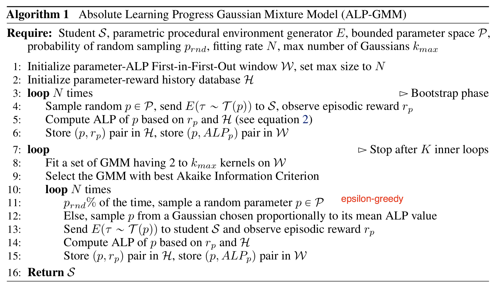
通过自我对弈构建课程#
与教师-学生框架不同，两个智能体在做完全不同的事情。教师在不了解实际任务内容的情况下学习挑选任务给学生。如果我们希望两者都直接在主任务上训练呢？甚至让它们互相竞争又如何？
Sukhbaatar 等（2017）提出了一种通过非对称自我对弈实现自动课程学习的框架。两个智能体 Alice 和 Bob 玩同一个任务但目标不同：Alice 挑战 Bob 达到相同状态，而 Bob 则试图尽快完成。
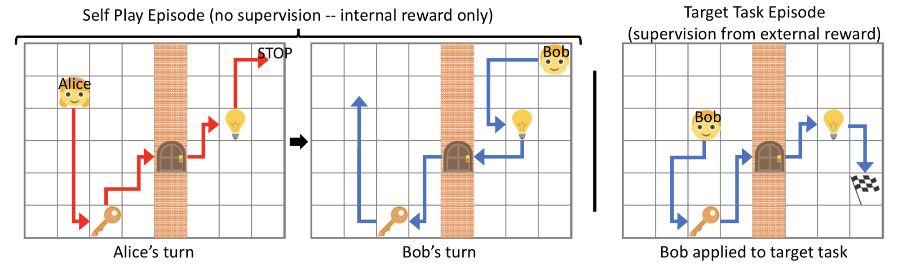
我们可以将 Alice 和 Bob 视为同一个强化学习智能体的两个独立副本，它们在相同环境中训练但拥有不同的大脑。它们各自拥有独立的参数和损失目标。由自我对弈驱动的训练包含两种类型的 episode：
- 在自我对弈 episode 中，Alice 将状态从 s_0 改变为 s_t，然后要求 Bob 将环境恢复到原始状态 s_0 以获得内部奖励。
- 在目标任务 episode 中，如果 Bob 到达目标旗帜，则获得外部奖励。
请注意，由于 B 必须重复 A 在同一对 (s_0, s_t) 之间的动作，这个框架仅适用于可逆或可重置的环境。
Alice 应该学会把 Bob 推出其舒适区，但不能给他不可能完成的任务。Bob 的奖励被设为 R_B = -\gamma t_B，Alice 的奖励为 R_A = \gamma \max(0, t_B - t_A)，其中 t_B 是 B 完成任务的总时间，t_A 是 Alice 执行 STOP 动作前的时间，\gamma 是一个标量常数，用于将奖励缩放到与外部任务奖励相当的水平。如果 B 失败，t_B = t_\max - t_A。 两个策略都是目标条件化的。损失意味着：
- B 希望尽快完成任务。
- A 偏好让 B 花费更多时间的任务。
- 当 B 失败时，A 不希望花费太多步数。
通过这种方式，Alice 和 Bob 之间的互动自动构建了一个难度逐渐增加的任务课程。同时，由于 A 在向 B 提出任务之前自己已经完成过该任务，任务保证是可解的。
A 提出任务然后 B 解决它们的范式听起来与教师-学生框架类似。然而，在非对称自我对弈中，扮演教师角色的 Alice 也在同一个任务上工作以找到对 Bob 有挑战性的案例，而不是显式地优化 B 的学习过程。
自动目标生成#
强化学习策略通常需要能够在一组任务上执行。目标的选择必须谨慎，以便在每个训练阶段，对于当前策略而言既不会太难也不会太容易。一个目标 g \in \mathcal{G} 可以定义为一组状态 S^g，当智能体到达其中任何一个状态时，就认为目标已达成。
生成式目标学习（Florensa 等，2018）的方法依赖于 Goal GAN 来自动生成所需的目标。在他们的实验中，奖励非常稀疏，只有是否达成目标的二元标志，并且策略是基于目标进行条件化的，
这里 R^g(\pi) 是期望回报，也等价于成功概率。给定从当前策略采样得到的轨迹，只要其中任何一个状态属于目标集，回报就会为正。
他们的方法迭代以下 3 个步骤直到策略收敛：
- 根据当前策略是否处于合适难度水平，对一组目标进行标注。
- 处于合适难度水平的目标集被称为 GOID（“中间难度目标”的缩写）。\text{GOID}_i := \{g : R_\text{min} \leq R^g(\pi_i) \leq R_\text{max} \} \subseteq G
- 这里 R_\text{min} 和 R_\text{max} 可以解释为在 T 个时间步内到达目标的最小和最大概率。
- 使用步骤 1 中标注的目标训练 Goal GAN 模型以产生新目标
- 使用这些新目标训练策略，改进其覆盖目标。
Goal GAN 自动生成课程：
- 生成器 G(z)：产生一个新目标。=> 期望是从 GOID 集合中均匀采样的目标。
- 判别器 D(g)：评估一个目标是否可达成。=> 期望判断一个目标是否来自 GOID 集合。
Goal GAN 的构造类似于 LSGAN（Least-Squared GAN；Mao 等，2017），其学习稳定性优于 vanilla GAN。根据 LSGAN，我们应该分别最小化以下针对 D 和 G 的损失：
其中 a 是假数据的标签，b 是真实数据的标签，而 c 是 G 希望 D 对假数据相信的值。在 LSGAN 论文的实验中，他们使用了 a=-1, b=1, c=0。
Goal GAN 引入了一个额外的二元标志 y_b，用于指示目标 g 是真实的（y_g = 1）还是假的（y_g = 0），以便模型可以使用负样本来训练：
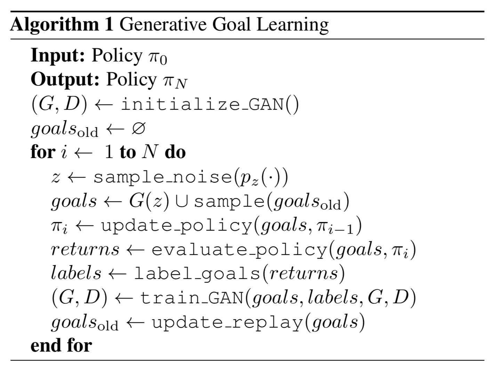
遵循相同思路，Racaniere & Lampinen 等（2019）设计了一种方法，使目标生成器的目标更加复杂。他们的方法包含三个组件，与上面的生成式目标学习相同：
- 求解器/策略 \pi：每个 episode 开始时，求解器获得一个目标 g，在结束时获得一个二元奖励 R^g。
- 裁判/判别器 D(.)：一个分类器，用于预测二元奖励（目标是否可达成）；精确地说，它输出达成给定目标的概率的对数几率 \sigma(D(g)) = p(R^g=1\vert g)，其中 \sigma 是 sigmoid 函数。
- 设置器/生成器 G(.)：目标设置器以期望的可行性分数 f \in \text{Unif}(0, 1) 为输入，生成 g = G(z, f)，其中潜在变量 z 通过 z \sim \mathcal{N}(0, I) 采样。目标生成器被设计为可逆的，因此 G^{-1} 可以从目标 g 反向映射到潜在变量 z = G^{-1}(g, f)。
生成器使用三个目标进行优化：
- Goal validity: The proposed goal should be achievable by an expert policy. The corresponding generative loss is designed to increase the likelihood of generating goals that the solver policy has achieved before (like in HER). \mathcal{L}_\text{val} is the negative log-likelihood of generated goals that have been solved by the solver in the past.
- Goal feasibility: The proposed goal should be achievable by the current policy; that is, the level of difficulty should be appropriate. \mathcal{L}_\text{feas} is the output probability by the judge model D on the generated goal G(z, f) should match the desired f.
- 目标覆盖度：我们应该最大化生成目标的熵，以鼓励目标的多样性并提升对目标空间的覆盖。
他们的实验表明，复杂环境需要上述所有三个损失。当环境在 episode 之间发生变化时，目标生成器和判别器都需要以环境观察为条件才能产生更好的结果。如果存在期望的目标分布，可以添加一个额外损失，使用 Wasserstein 距离来匹配该分布。使用这个损失，生成器可以更高效地将求解器推向掌握期望任务。
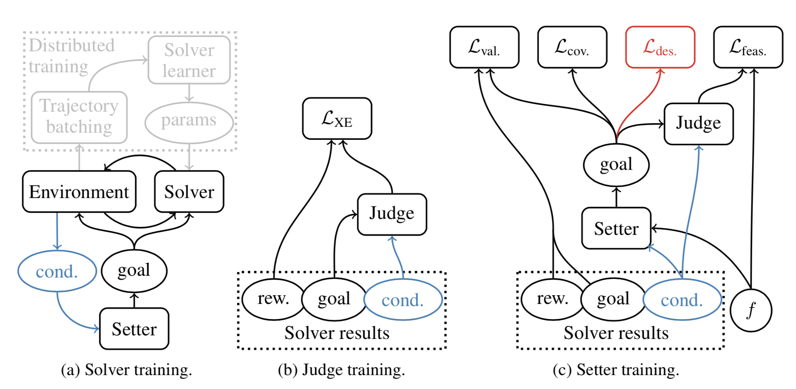
基于技能的课程#
另一种观点是将智能体能够完成的事情分解为多种技能，每个技能集都可以映射到一个任务。想象一下，当智能体以无监督的方式与环境交互时，是否有办法从这种交互中发现有用的技能，并进一步通过课程将其构建成更复杂任务的解决方案？
Jabri 等（2019）开发了一种自动课程 CARML（“无监督元强化学习课程”的缩写），通过将无监督轨迹建模到一个潜在技能空间中，重点训练 元强化学习 策略（即能迁移到未见过任务的策略）。CARML 中训练环境的设置与 元强化学习 类似。不同的是，CARML 在像素级观察上训练，而 DIAYN 在真实状态空间上操作。一个由 \theta 参数化的强化学习算法 \pi_\theta，通过无监督交互进行训练，该交互被形式化为结合学习到的奖励函数 r 的 CMP。这种设置自然适用于元学习目的，因为定制的奖励函数只在测试时给出。
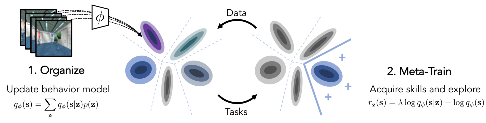
CARML 被形式化为 变分期望最大化 (EM)。
(1) E 步：这是组织经验数据的阶段。收集到的轨迹被建模为潜在成分的混合，形成技能的 基。
令 z 为潜在任务变量，q_\phi 为 z 的变分分布，它可以是具有离散 z 的混合模型，或具有连续 z 的 VAE。一个变分后验 q_\phi(z \vert s) 像一个分类器，根据状态预测技能，我们希望最大化 q_\phi(z \vert s) 以尽可能区分不同技能产生的数据。在 E 步中，q_\phi 被拟合到由 \pi_\theta 产生的一组轨迹上。
精确地说，给定一条轨迹 \tau = (s_1,\dots,s_T)，我们希望找到 \phi 使得
这里做了一个简化假设，忽略一条轨迹中状态的顺序。
(2) M 步：这是使用 \pi_\theta 进行元强化学习训练的阶段。学习到的技能空间被视为训练任务分布。CARML 对用于策略参数更新的元强化学习算法类型不做假设。
给定一条轨迹 \tau，策略最大化 \tau 和 z 之间的互信息 I(\tau;z) = H(\tau) - H(\tau \vert z) 是合理的，因为：
- 最大化 H(\tau) => 策略数据空间的多样性；预期较大。
- 最小化 H(\tau \vert z) => 给定某个技能，行为应该受限；预期较小。
于是我们有，
我们可以将奖励设为 \log q_\phi(s \vert z) - \log q_\phi(s)，如上式红色部分所示。为了在任务特定探索（如下红色部分）和潜在技能匹配（如下蓝色部分）之间取得平衡，加入了一个参数 \lambda \in [0, 1]。z \sim q_\phi(z) 的每个实现都会诱导一个奖励函数 r_z(s)（记住奖励 + CMP => MDP），如下：
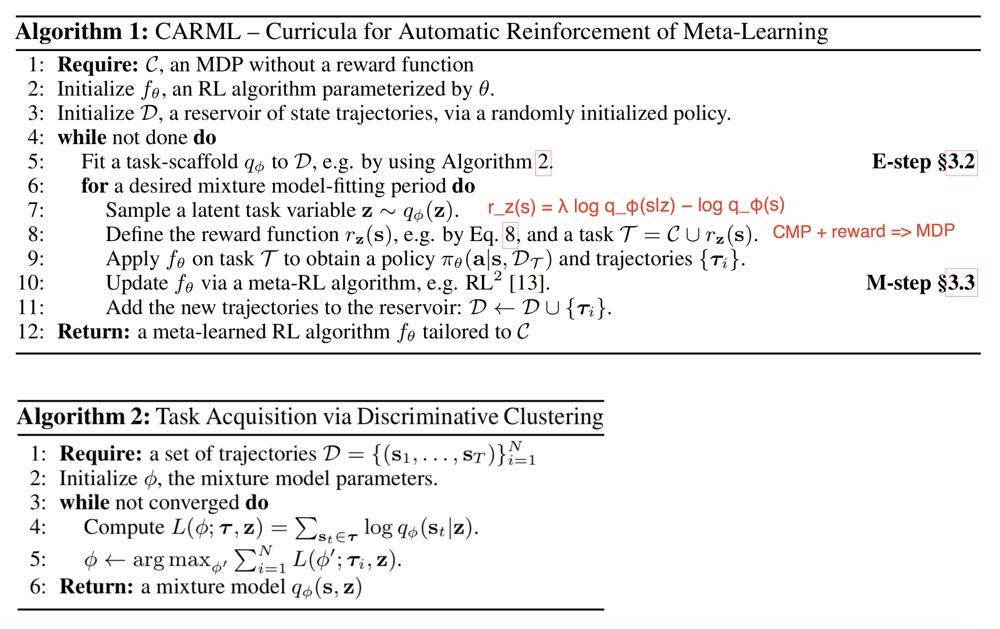
学习潜在技能空间可以通过不同方式实现，例如 Hausman 等，2018。他们方法的目的是学习一个任务条件化的策略 \pi(a \vert s, t^{(i)})，其中 t^{(i)} 来自离散的任务列表 N，共 \mathcal{T} = [t^{(1)}, \dots, t^{(N)}] 个。然而，与其为每个任务学习 N 个独立的解，不如学习一个潜在技能空间，让每个任务都能用技能上的分布来表示，从而技能可以在任务之间复用。策略被定义为 \pi_\theta(a \vert s,t) = \int \pi_\theta(a \vert z,s,t) p_\phi(z \vert t)\mathrm{d}z，其中 \pi_\theta 和 p_\phi 分别是待学习的策略网络和嵌入网络。如果 z 是离散的，即从 K 个技能集合中抽取，则策略成为 K 个子策略的混合。策略训练使用 SAC，并在熵项中引入对 z 的依赖。
通过蒸馏构建课程#
[我为这个章节的名字思考了一段时间，在克隆、继承和蒸馏之间犹豫。最后选择了蒸馏，因为它听起来最酷 B-)]
渐进式神经网络（Rusu 等，2016）架构的动机是高效地在不同任务之间迁移学习到的技能，同时避免灾难性遗忘。课程通过一组逐步堆叠的神经网络塔（或论文中称为“列”）来实现。
渐进式网络具有以下结构：
- It starts with a single column containing L layers of neurons, in which the corresponding activation layers are labelled as h^{(1)}_i, i=1, \dots, L. We first train this single-column network for one task to convergence, achieving parameter config \theta^{(1)}.
- Once switch to the next task, we need to add a new column to adapt to the new context while freezing \theta^{(1)} to lock down the learned skills from the previous task. The new column has activation layers labelled as h^{(2)}_i, i=1, \dots, L, and parameters \theta^{(2)}.
- Step 2 can be repeated with every new task. The i-th layer activation in the k-th column depends on the previous activation layers in all the existing columns: __MATHBLOCK_122__ where W^{(k)}_i is the weight matrix of the layer i in the column k; U_i^{(k:j)}, j < k are the weight matrices for projecting the layer i-1 of the column j to the layer i of column k ( j < k ). The above weights matrices should be learned. f(.) is a non-linear activation function by choice.
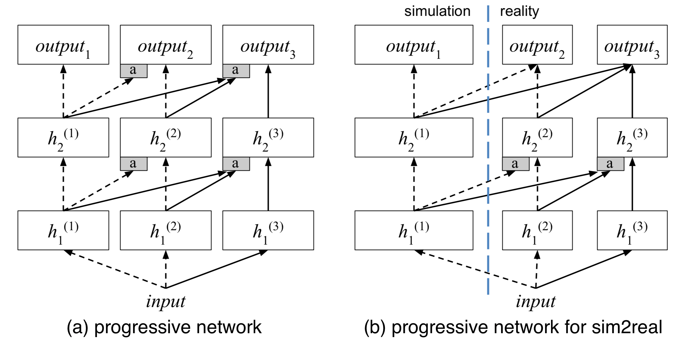
论文通过在多个 Atari 游戏上训练渐进式网络来实验，检查在一个游戏中学习的特征是否能迁移到另一个游戏。事实确实如此。虽然有趣的是，对先前列中特征的高度依赖并不总是意味着在新任务上良好的迁移性能。一个假设是，从旧任务学到的特征可能给新任务引入偏差，导致策略陷入次优解。总体而言，渐进式网络比仅微调顶层表现更好，并且能达到与微调整个网络相似的迁移性能。
渐进式网络的一个用例是进行 sim2real 迁移（Rusu 等，2017），其中第一列在模拟器中使用大量样本训练，随后添加额外的列（可能针对不同的真实世界任务）并使用少量真实数据样本训练。
Czarnecki 等（2018）提出了另一种强化学习训练框架 Mix & Match（简称 M&M），通过在智能体之间复制知识来提供课程。给定一个从简单到复杂的智能体序列 \pi_1, \dots, \pi_K，每个都用一些共享权重参数化（例如共享某些较低的公共层）。M&M 训练智能体的混合，但只有最复杂那个 \pi_K 的最终性能才重要。
与此同时，M&M 学习一个类别分布 c \sim \text{Categorical}(1, \dots, K \vert \alpha)，其概率质量函数 p(c=i) = \alpha_i 决定在给定时刻选择哪个策略。混合的 M&M 策略是一个简单的加权和：\pi_\text{mm}(a \vert s) = \sum_{i=1}^K \alpha_i \pi_i(a \vert s)。课程学习通过动态调整 \alpha_i 从 \alpha_K=0 到 \alpha_K=1 来实现。\alpha 的调优可以是手动的，也可以通过 演化策略。
为了鼓励策略之间合作而非竞争，除了强化学习损失 \mathcal{L}_\text{RL} 之外，还添加了一个类似 蒸馏 的损失 \mathcal{L}_\text{mm}(\theta)。知识迁移损失 \mathcal{L}_\text{mm}(\theta) 衡量两个策略 \propto D_\text{KL}(\pi_{i}(. \vert s) | \pi_j(. \vert s)) 之间的 KL 散度（针对 i < j）。它鼓励复杂智能体在早期匹配更简单的那些。最终损失为 \mathcal{L} = \mathcal{L}_\text{RL}(\theta \vert \pi_\text{mm}) + \lambda \mathcal{L}_\text{mm}(\theta)。
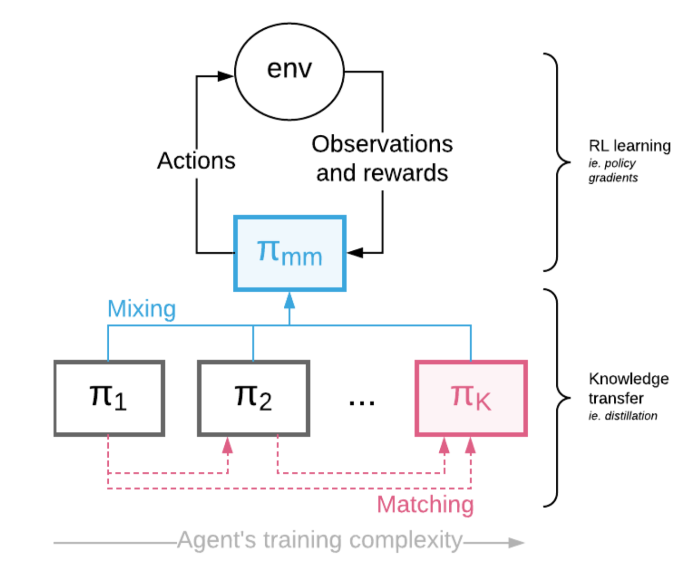
引用#
引用格式：
Weng, Lilian. (Jan 2020). Curriculum for reinforcement learning. Lil’Log. https://lilianweng.github.io/posts/2020-01-29-curriculum-rl/.
@article{weng2020curriculum,
title = "Curriculum for Reinforcement Learning",
author = "Weng, Lilian",
journal = "lilianweng.github.io",
year = "2020",
month = "Jan",
url = "https://lilianweng.github.io/posts/2020-01-29-curriculum-rl/"
}
参考文献#
[1] Jeffrey L. Elman. “Learning and development in neural networks: The importance of starting small.” Cognition 48.1 (1993): 71-99.
[2] Yoshua Bengio, et al. “Curriculum learning.” ICML 2009.
[3] Daphna Weinshall, Gad Cohen, and Dan Amir. “Curriculum learning by transfer learning: Theory and experiments with deep networks.” ICML 2018.
[4] Wojciech Zaremba and Ilya Sutskever. “Learning to execute.” arXiv preprint arXiv:1410.4615 (2014).
[5] Tambet Matiisen, et al. “Teacher-student curriculum learning.” IEEE Trans. on neural networks and learning systems (2017).
[6] Alex Graves, et al. “Automated curriculum learning for neural networks.” ICML 2017.
[7] Remy Portelas, et al. Teacher algorithms for curriculum learning of Deep RL in continuously parameterized environments. CoRL 2019.
[8] Sainbayar Sukhbaatar, et al. “Intrinsic Motivation and Automatic Curricula via Asymmetric Self-Play.” ICLR 2018.
[9] Carlos Florensa, et al. “Automatic Goal Generation for Reinforcement Learning Agents” ICML 2019.
[10] Sebastien Racaniere & Andrew K. Lampinen, et al. “Automated Curriculum through Setter-Solver Interactions” ICLR 2020.
[11] Allan Jabri, et al. “Unsupervised Curricula for Visual Meta-Reinforcement Learning” NeurIPS 2019.
[12] Karol Hausman, et al. “Learning an Embedding Space for Transferable Robot Skills “ ICLR 2018.
[13] Josh Merel, et al. “Reusable neural skill embeddings for vision-guided whole body movement and object manipulation” arXiv preprint arXiv:1911.06636 (2019).
[14] OpenAI, et al. “Solving Rubik’s Cube with a Robot Hand.” arXiv preprint arXiv:1910.07113 (2019).
[15] Niels Justesen, et al. “Illuminating Generalization in Deep Reinforcement Learning through Procedural Level Generation” NeurIPS 2018 Deep RL Workshop.
[16] Karl Cobbe, et al. “Quantifying Generalization in Reinforcement Learning” arXiv preprint arXiv:1812.02341 (2018).
[17] Andrei A. Rusu et al. “Progressive Neural Networks” arXiv preprint arXiv:1606.04671 (2016).
[18] Andrei A. Rusu et al. “Sim-to-Real Robot Learning from Pixels with Progressive Nets.” CoRL 2017.
[19] Wojciech Marian Czarnecki, et al. “Mix & Match – Agent Curricula for Reinforcement Learning.” ICML 2018.